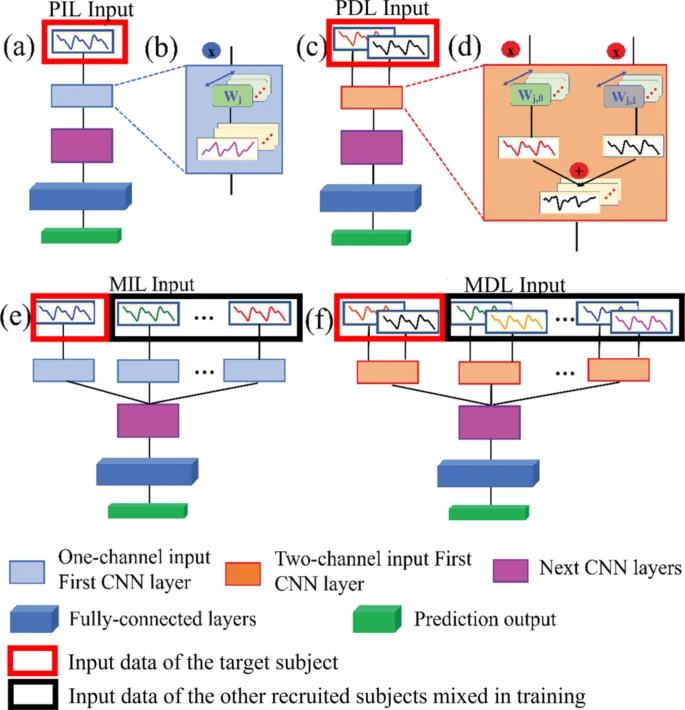

A snapshot of my research themes and selected works. Use the filters to explore.

PPG-only Blood Pressure Estimation
Built a PPG-only cuffless blood pressure estimation method using a CNN-based approach called Mixed Deduction Learning (MDL), requiring only 9 minutes of personal data combined with data from 364 subjects. The model demonstrates strong long-term stability (over 30+ days without recalibration) and meets major clinical standards for static testing. By leveraging two-channel inputs, MDL improves performance and effectively handles individual physiological variations, making it suitable for real-world and commercial applications.
Full Field - Optical Coherence Tomography (FF-OCT) human skin blood vessel and red-blood cell extraction
Developed segmentation and quantitative analysis methods for 2D/3D FF-OCT data to extract human-skin blood vessel and red blood cells
and to enable computer-assisted diagnosis workflows.
Applies signal processing alongside regression and classification models to estimate glucose levels from NIR spectral signals. Emphasizes rigorous calibration, validation, and error analysis to ensure accuracy and reliability.
Obesity Levels Based on Eating Habits & Physical Condition
As part of a data science program at the University of Toronto, our team analyzes how lifestyle factors such as eating habits and physical condition influence obesity levels using a validated dataset and predictive models. The findings provide actionable insights for public health authorities, healthcare providers, and insurers to better assess and manage obesity-related risks.